OM3 data-poor stock assessment
2022-11-28
15_OM3_data_poor_stock_assessment_2012.RmdCase 0: stock assessment base run (terminal year = 2012)
B0

Case 0: scenario A
Case 0: scenario B
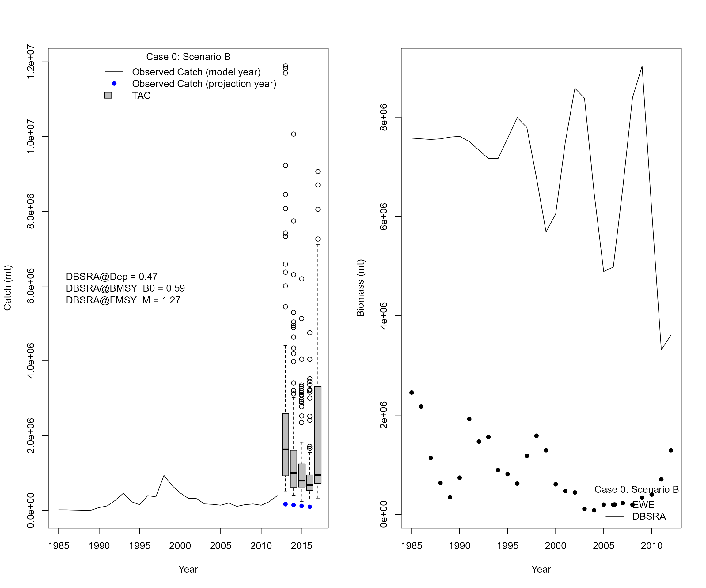
- Case 0: scenario C
- Add 11 years of equilibrium catches (max catch) to the start of the catch
- Try a sequence of Dep (0.1 - 0.9 with interval of 0.05), BMSY_B0 (0.1 - 0.9 with interval of 0.05), and FMSY_M (0.1 - 2.0 with an interval of 0.05) and find the scenario that has the lowest sum of squared differences
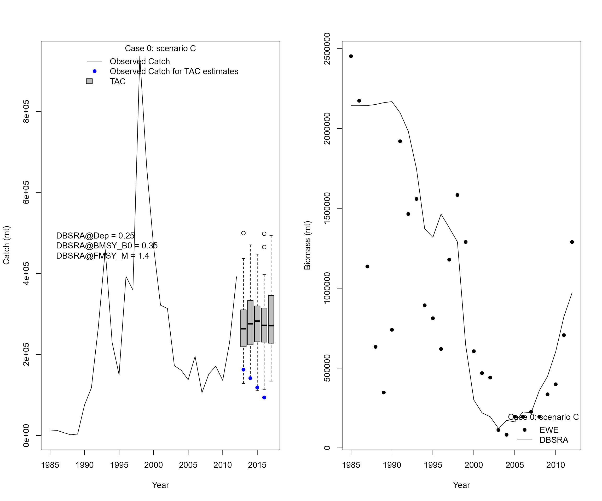
Linear regression models from cases 1 - 5 using “true” values from EwE
Case 1: Link Atlantic Multidecadal Oscillation Index with menhaden biomass estimates and adjust projections: AMO is an indicator of climate conditions and would affect recruitment variability of menhaden-like species
Case 2: Link Palmer drought severity index with menhaden biomass estimates and adjust projections: PSDI is a long-term indicator of drought conditions and it reflects river discharge and precipitation
Case 3: Link biomass of Striped bass from the EwE with menhaden biomass estimates and adjust projections because bass is a major predator
Case 4: Link fishing effort of menhaden with menhaden biomass estimates and adjust projections
Case 5: Link catch per unit effort of menhaden with menhaden biomass estimates and adjust projections
-
Linear regression models from case 1 - 5 (Lag = 1)
- True biomass of menhaden-like species as functions of AMO, PDSI, biomass of striped bass, fishing effort of menhaden, and menhaden CPUE
Status of indicators (SOI)
If stock-indicator relationship is positive, \(SOI_{y} = \frac{I_{y}-I_{y}^{min}}{I_{y}^{max}-I_{y}^{min}}\)
-
If stock-indicator relationship is negative, \(SOI_{y} = 1-\frac{I_{y}-I_{y}^{min}}{I_{y}^{max}-I_{y}^{min}}\)
where \(I_{y}\) represents indicator value in year y. \(I_{y}^{min}\) and \(I_{y}^{max}\) represent the minimum and maximum values of \(I\) from the time series.

Cases 1-5 are based on the settings from Scenario A

 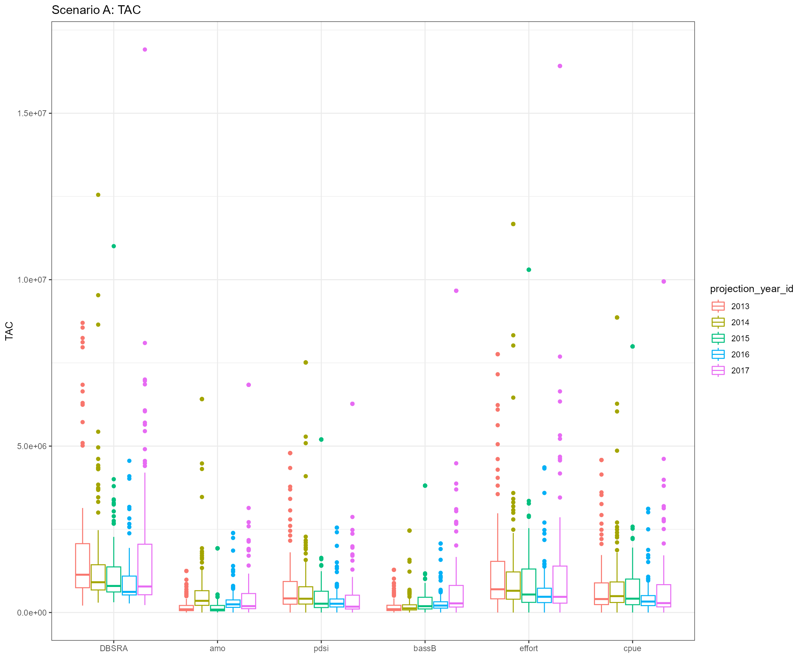
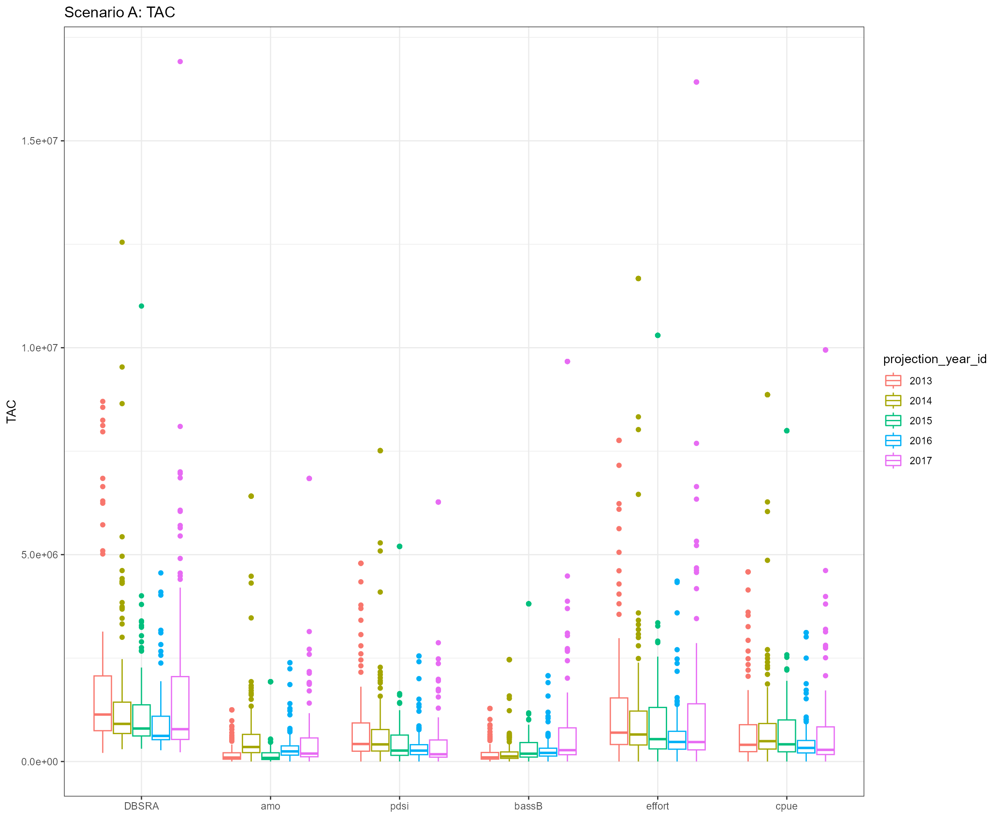
- Slope values from linear regression models
| case | projection_year | amo | pdsi | bassB | effort | cpue |
|---|---|---|---|---|---|---|
| scenario A | 2013 | -819470.8 | -1032381.96* | -3.22 | -2713.85 | -2.16 |
| scenario A | 2014 | -1052605.44* | -432709.68 | -3.87* | 905.12 | -5.41 |
| scenario A | 2015 | -812910.62* | -45347.83 | -3.76* | 34.94 | -2.16 |
| scenario A | 2016 | -580359.86 | 280475.24 | -3.05* | -1207.52 | 0.67 |
| scenario A | 2017 | -857961.8* | 101631.72 | -3.74* | 1704.48 | -1.85 |
Cases 1-5 are based on the settings from Scenario B
 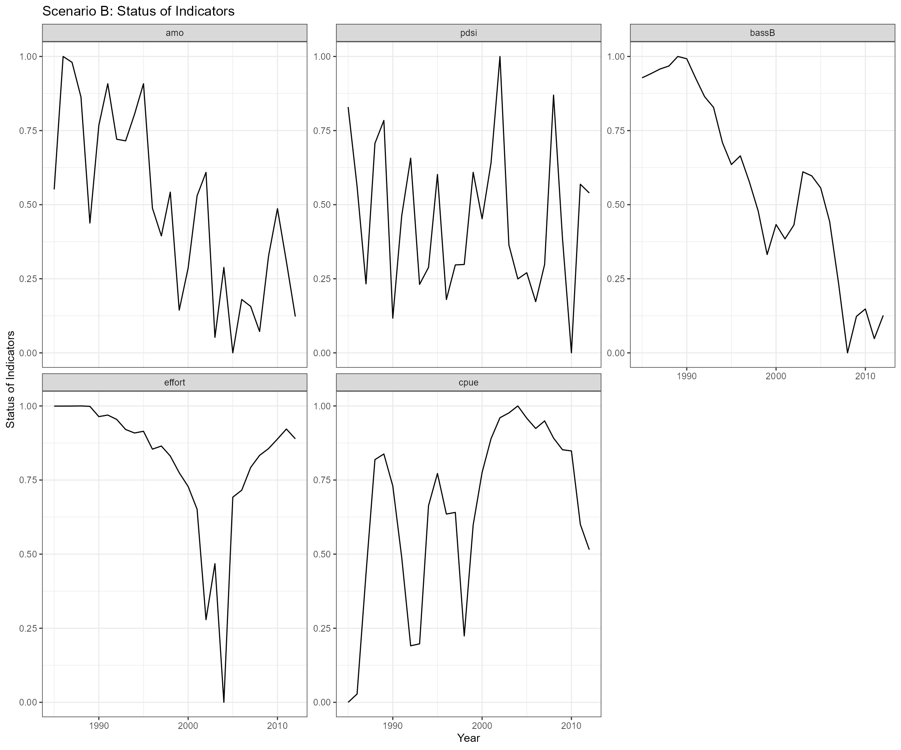
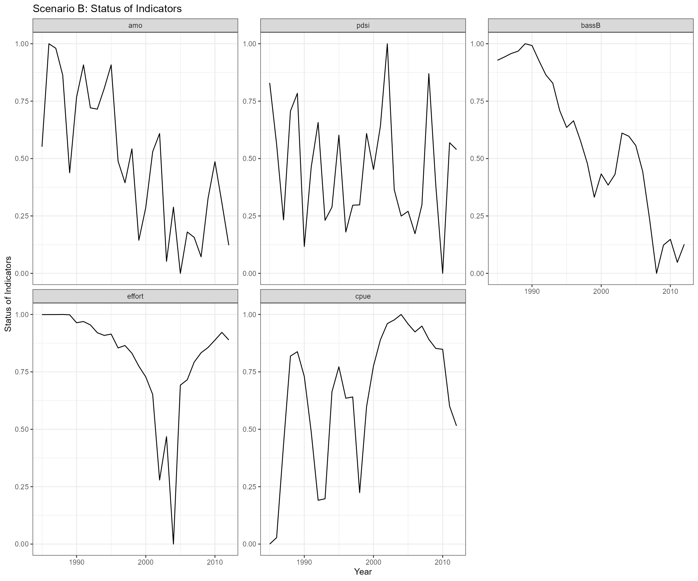
- Slope values from linear regression models
| case | projection_year | amo | pdsi | bassB | effort | cpue |
|---|---|---|---|---|---|---|
| scenario B | 2013 | -1209717.33 | -1618356.72* | -4.8 | -6712.06 | 5.51 |
| scenario B | 2014 | -825794.32* | -334380.08 | -3.23* | 1030.96 | -7.43 |
| scenario B | 2015 | -661606.75* | 97567.81 | -3.25* | 164.75 | -2.65 |
| scenario B | 2016 | -680500.8* | 244112.29 | -3.4* | -172.81 | 0.73 |
| scenario B | 2017 | -969288.21* | -17058.67 | -4.13* | 2581.99 | -1.96 |
Cases 1-5 are based on the settings from Scenario C
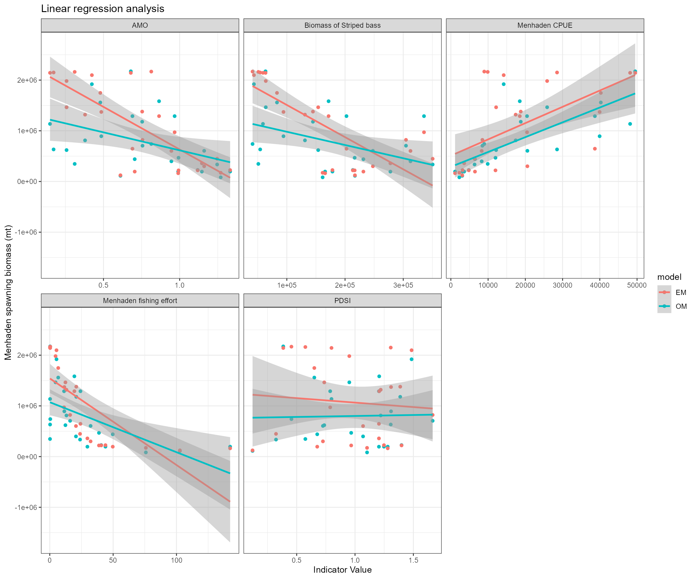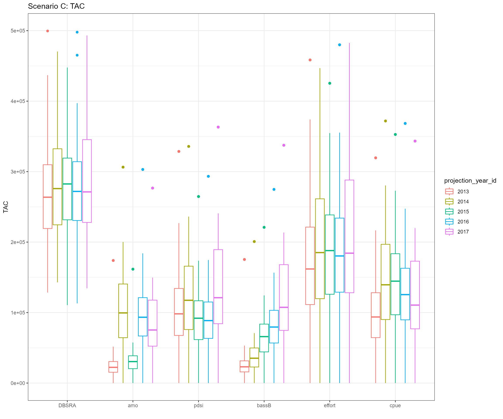
- Slope values from linear regression models
| case | projection_year | amo | pdsi | bassB | effort | cpue |
|---|---|---|---|---|---|---|
| Scenario C | 2013 | -1680849.78* | -176322.63 | -6.34* | -17085.36* | 32.12* |
| Scenario C | 2014 | -1575037.07* | -166568.96 | -5.75* | -16994.21* | 31.31* |
| Scenario C | 2015 | -1572021.5* | -171849.44 | -5.32* | -17099.55* | 31.3* |
| Scenario C | 2016 | -1471361.22* | -171545.42 | -5.14* | -17232* | 31.15* |
| Scenario C | 2017 | -894008.45* | -35182.31 | -2.45* | -15324.26* | 19.49* |
- Projections 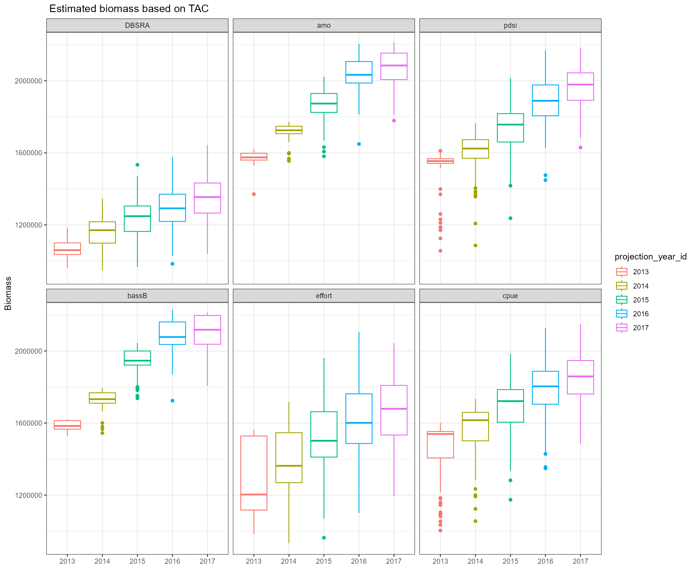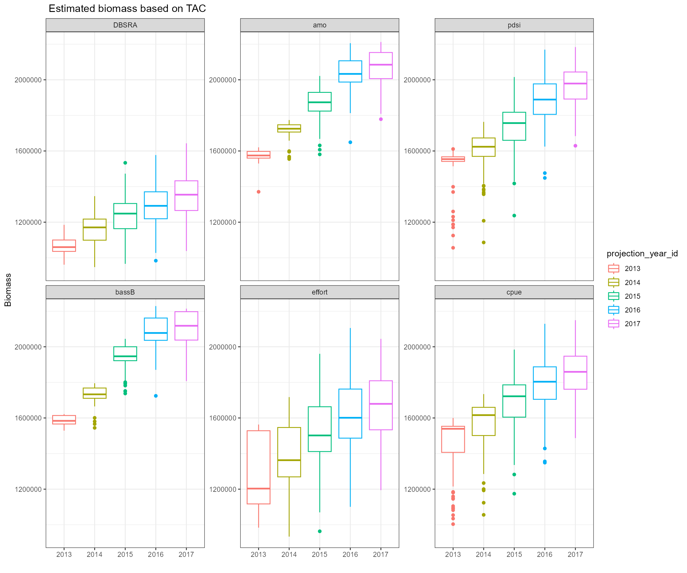
## Average_Catch B_K B_BMSY Average_Biomass
## Max 273057 0.2470 0.7055 1891746
## Min 0 0.0000 0.0000 0
## OM+OM FMSY 271258 0.0305 0.0515 346883
## OM+DBSRA FMSY 172737 0.1552 0.2625 683673
## OM+AMO Fadj 56821 0.2305 0.3898 861023
## OM+PDSI Fadj 79341 0.2189 0.3702 819225
## OM+Bass Biomass Fadj 53502 0.2348 0.3971 872830
## OM+Effot Fadj 127069 0.1879 0.3178 758753
## OM+CPUE Fadj 93451 0.2085 0.3527 805014
## DBSRA EM+DBSRA FMSY 273057 0.2465 0.7049 1224971
## DBSRA EM+AMO Fadj 64188 0.2462 0.7009 1858218
## DBSRA EM+PDSI Fadj 103465 0.2470 0.7041 1760533
## DBSRA EM+Bass Biomass Fadj 62211 0.2455 0.7034 1891746
## DBSRA EM+Effort Fadj 179909 0.2461 0.7040 1469680
## DBSRA EM+CPUE Fadj 122770 0.2468 0.7055 1708019
## Bonanza_Period Collapse_Period
## Max 5 0
## Min 0 5
## OM+OM FMSY 0 5
## OM+DBSRA FMSY 0 1
## OM+AMO Fadj 0 0
## OM+PDSI Fadj 0 0
## OM+Bass Biomass Fadj 0 0
## OM+Effot Fadj 0 1
## OM+CPUE Fadj 0 0
## DBSRA EM+DBSRA FMSY 0 0
## DBSRA EM+AMO Fadj 0 1
## DBSRA EM+PDSI Fadj 0 1
## DBSRA EM+Bass Biomass Fadj 0 1
## DBSRA EM+Effort Fadj 0 1
## DBSRA EM+CPUE Fadj 0 0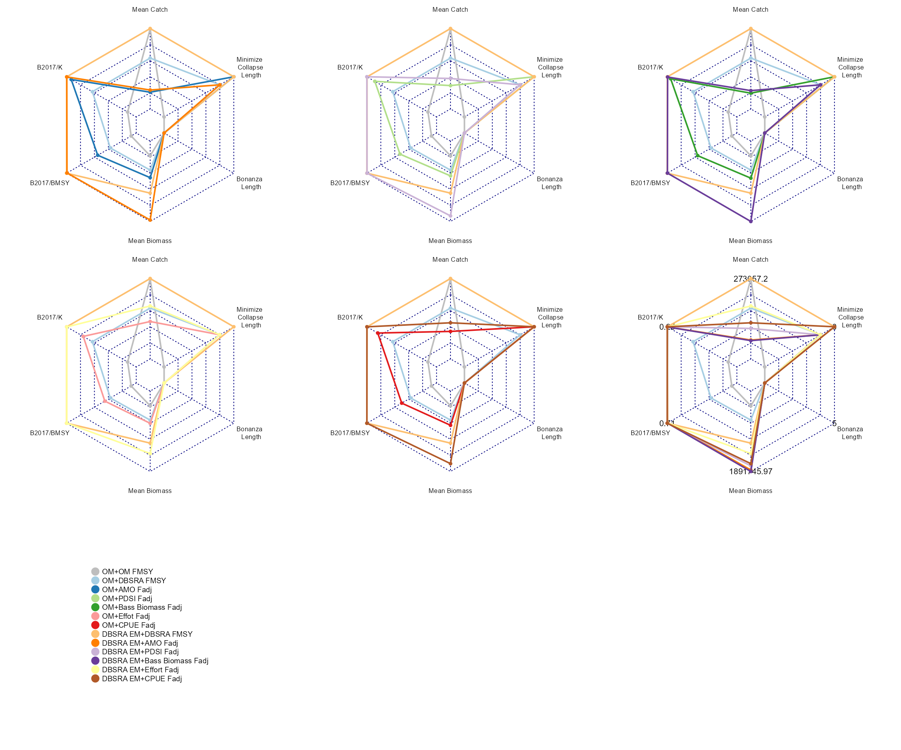